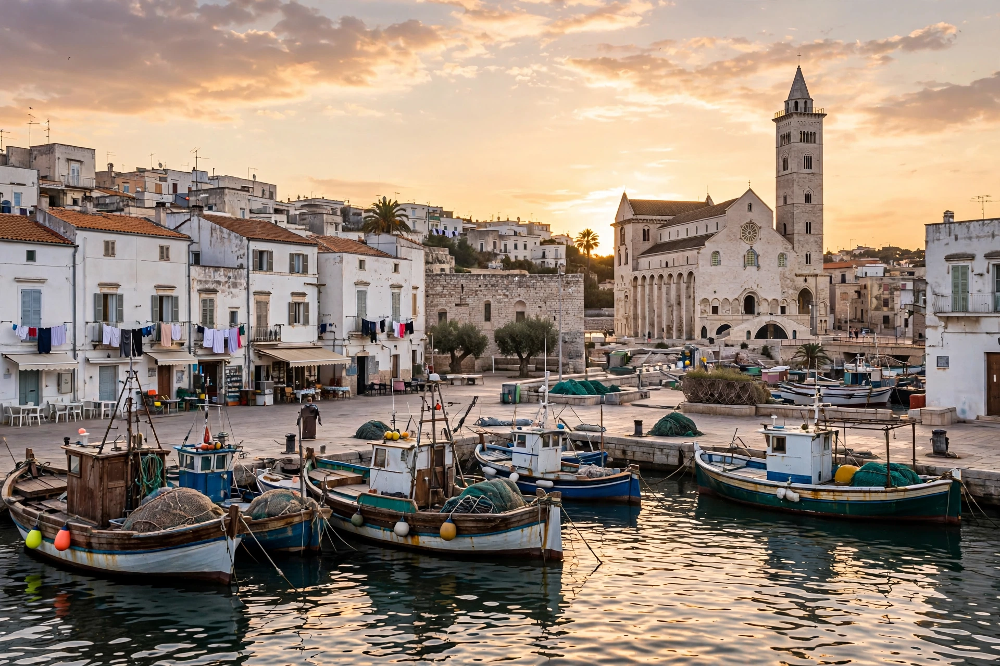

Bari is the capital city of the Metropolitan City of Bari and of the Apulia region, on the Adriatic Sea in southern Italy. It is the second most important economic centre of mainland Southern Italy after Naples.

Ancient Barium was a Peucetian and Roman port. Bari became important under Byzantine rule, was conquered by Lombards, Saracens (who established an emirate, 847–871), Normans and others. The Basilica of Saint Nicholas, built from 1087 to house the relics of Saint Nicholas brought from Myra, made it a pilgrimage centre for both Catholic and Orthodox Christians.
Bari Vecchia, the old town on a peninsula, contains the basilica, the Cathedral of San Sabino and the Norman-Swabian Castle. The 19th-century Murat quarter is laid out in a grid south of it.
Bari is a major port and university city, home to the University of Bari Aldo Moro.